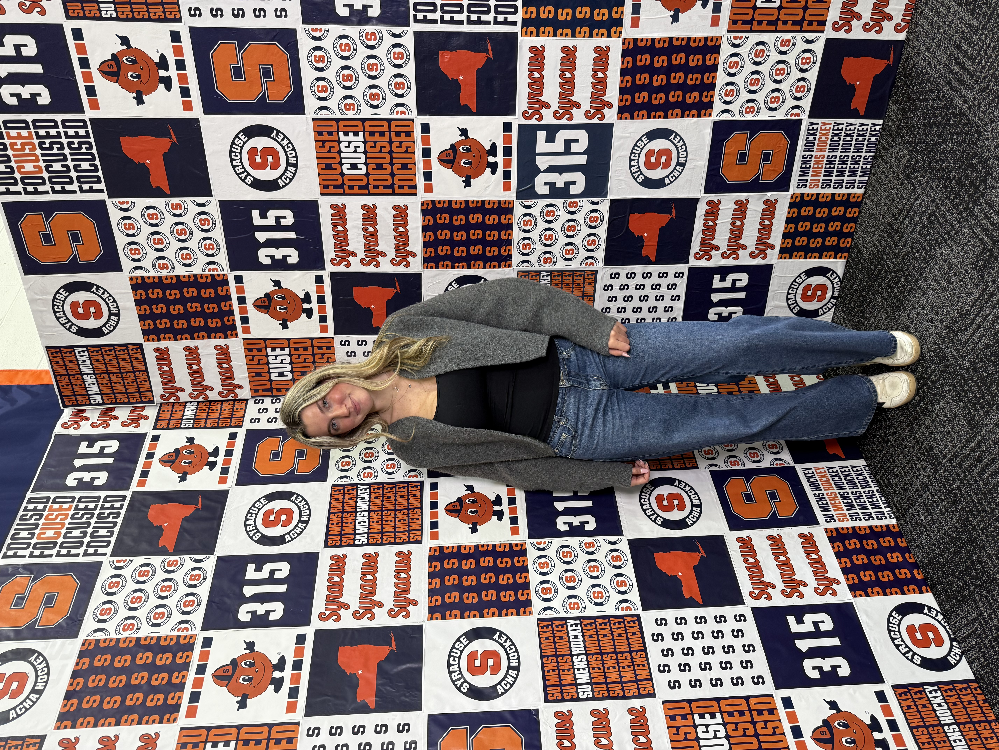

Hi! I'm Ava Rabinovich, a sophomore at Syracuse University studying Advertising at the S.I. Newhouse School of Public Communications.
I've gained experience in marketing, social media and content creation through internships with the Staten Island FerryHawks, Inspirica Pros and Syracuse University's club ice hockey teams.
In the future, I hope to pursue a career in sports marketing, advertising, or corporate partnerships. I'm especially interested in combining creativity and business to help brands connect with their audiences.
